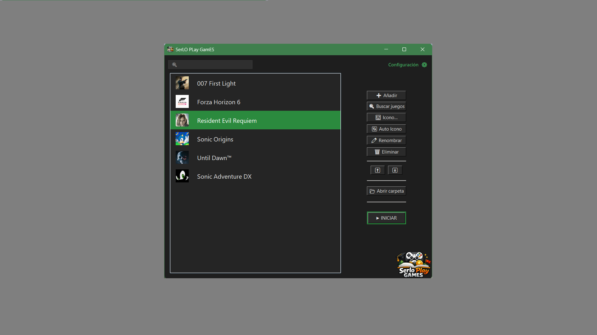
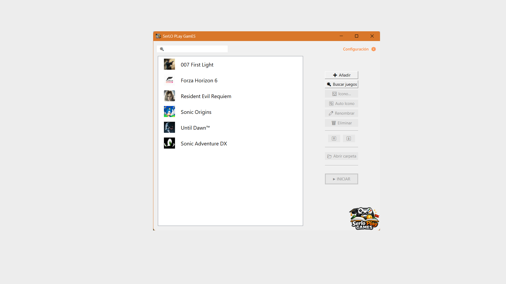
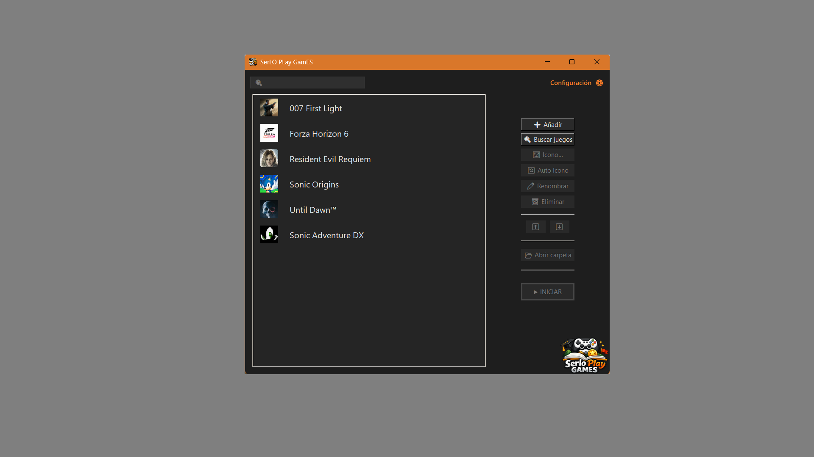
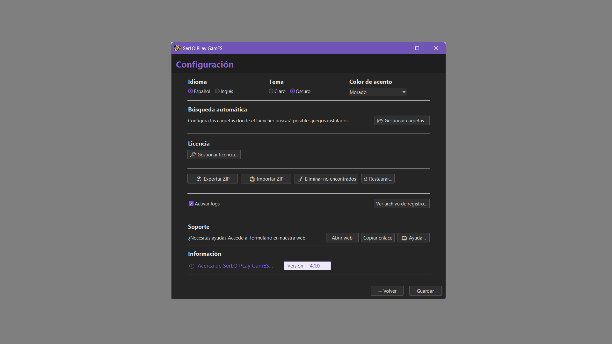

🧩 ¿Qué es?
SerLO PLay GamES es un launcher portable para Windows que te permite organizar, lanzar y personalizar tus juegos, accesos directos y aplicaciones desde un único lugar.
Es compatible con archivos .exe, accesos directos .lnk y accesos directos a Internet .url, incluyendo compatibilidad mejorada con Steam.
Está pensado para centralizar y simplificar el acceso a tus aplicaciones favoritas con una interfaz ligera, clara y fácil de usar.
✨ Novedades de la versión 3.0.0
- 🚀 Sistema de iconos avanzado y compatibilidad con Steam.
- Extracción automática de iconos mejorada desde .exe, .lnk y .url.
- 🌍 Multiidioma (Español/Inglés).
- 🎨 Tema claro y oscuro.
- 🔎 Buscador integrado.
- 📦 Exportar / importar configuración mediante ZIP.
- 🧩 Gestión más completa de juegos, accesos directos y aplicaciones.
🖼️ Capturas




⚙️ Cómo funciona
- Descargas y ejecutas el programa en Windows, sin instalación.
- Puedes usarlo en modo demo con limitaciones.
- La activación se realiza dentro del propio launcher.
- Permite organizar, renombrar, reordenar y personalizar tus elementos.
🔄 Cómo se actualiza SerLO PLay GamES
SerLO PLay GamES es un programa portable, por lo que no requiere instalación.
Para actualizarlo, simplemente descarga la nueva versión y sustituye el antiguo .exe por el nuevo en la misma carpeta.
El resto de archivos y carpetas se mantienen intactos, por lo que no se pierde ninguna configuración ni información.
No es necesario desinstalar nada ni ejecutar instaladores: descargar, reemplazar y listo.
📦 Versiones anteriores
⚠️ Se recomienda usar siempre la última versión para garantizar compatibilidad, seguridad y mejor rendimiento.
Detalles
- Sistema de licencia movido a Configuración.
- Interfaz simplificada y más coherente.
- Botón “Añadir juego” simplificado a “Añadir”.
- Botón “JUGAR” cambiado a “Iniciar”.
- Ajustes visuales y de espaciado en la interfaz.
- Las ventanas secundarias ahora recuerdan su última posición.
Detalles
- Lanzamiento inicial del launcher.
- Organización y ejecución de juegos o software.
- Soporte para ejecutables (.exe) y accesos directos (.lnk).
- Asignación de iconos personalizados (PNG / GIF).
- Modo demo con limitaciones.
- Exportar / Importar configuración (ZIP).
📬 Ayuda y contacto
Si necesitas ayuda o tienes cualquier consulta, puedes ponerte en contacto desde aquí.
Abrir formulario de contacto